Thermal shock
When sudden changes in temperature cause dimensional changes ceramics often fail because of their brittle nature. Yet some ceramics are highly resistant.
Key phrases linking here: thermal shock - Learn more
Details
Thermal shock refers to stresses imposed on a ceramic by the volume changes associated with sudden shifts in temperature. Pouring hot coffee into a cup is a classic example; it is a mild thermal shock common to everyday use, and almost any type of clay product can withstand this (unless internal stresses already present, such as an excessively compressed glaze, just need a trigger to fracture the piece). Putting a frozen casserole into a hot oven is a more stressful scenario; everyone knows the importance of using special ceramic or glass for this. Subjecting a ceramic pan to an open flame is an even more drastic temperature change; few products can withstand this (and the ones that can will craze pretty well any glaze).
If you are a beginning potter or technician and just need assurance that the type of ware you want to make can withstand thermal shock, please see the last paragraph.
Fired ceramic does not withstand thermal shock nearly as well as other materials like steel, plastic, wood, etc. Ceramic is hard and resistant to abrasion, but it is brittle and propagates cracks readily. Common ceramic materials that have low thermal expansions or impart a chemistry useful in the firing of low-expansion products are petalite, cordierite, molochite, pyrophyllite, mullite, talc, spodumene, and zircon. One company marketing such products classifies these under the umbrella: Thermal and Shock.
Survival of thermal stress can take various forms. If a ceramic simply does not expand on heating and cooling in the temperature range at which the stress is being imposed, it will of course, not fail (even though it might have high expansion at other temperature ranges). Or, materials that normally might crack resist doing so because the object made from them is sufficiently thin-walled, smooth surfaced and has an even cross-section without any sharp contours (these deny cracks a place to start). Another strategy is to make sure the thermal expansion of the glaze complements the body. When bodies are fired to a high degree of vitrification they become more brittle; thus a thermal shock prevention mechanism can be to simply fire lower, producing a body of less density. Or if the microstructure of the material has alot of pores and aggregate grains, these will act as micro-crack terminators, which means that the substrate of the material will develop a resilience to heat shock that is a product of a crack network within (overall loss in strength is associated with this but sometimes it can be tolerated). An interesting example of this is terra cotta ware made by indigenous people around the world. The open porous nature of the substrate that is a product of the very low firing temperature gives it the ability, in many cases, to even survive an open flame. Of course, the natives using these vessels know that the downside of this is that the ware has very poor mechanical durability and cannot be glazed, but they accept this tradeoff (actually in many cases they do glaze it using lead compounds).
Ceramic substrates are typically high in quartz and quartz grains experience high expansion and contraction through quartz and cristobalite inversions. Thus where an application demands thermal shock resistance in these temperature ranges, the body must not have undissolved quartz grains in the matrix. Alumina is a similar situation. It too is refractory, but it does not have good thermal shock resistance at higher temperatures (whereas at lower ones it is better).
Thermal shock failure can take on different forms. If typical vitreous porcelains are subjected to an open flame, they will simply explode into shards. As their resistance improves, they might simply crack in half. Or they might crack, making a distinctive ringing sound, yet on inspection, that crack is not visible (but they will have lost the distinctive ring when tapped with a metal object). Some fired ceramic items can withstand many successive thermal shocks but, over time, they gradually weaken and eventually fail. Some materials that can survive sudden heating do not perform as well with sudden cooling. This typically happens when the item is glazed. It is common for the stresses of the glaze shrinking before the underlying body to cause the glaze to crack (called crazing), but the cracks do not propagate through the body.
It is fairly easy to test ceramic items for their ability to resist the thermal shock to which they are likely to be exposed. An example is a boiling water:ice water test, or a 300°F to ice water test.
Related Information
A potter is worried about her teapots cracking?
What can she do to ease her mind?
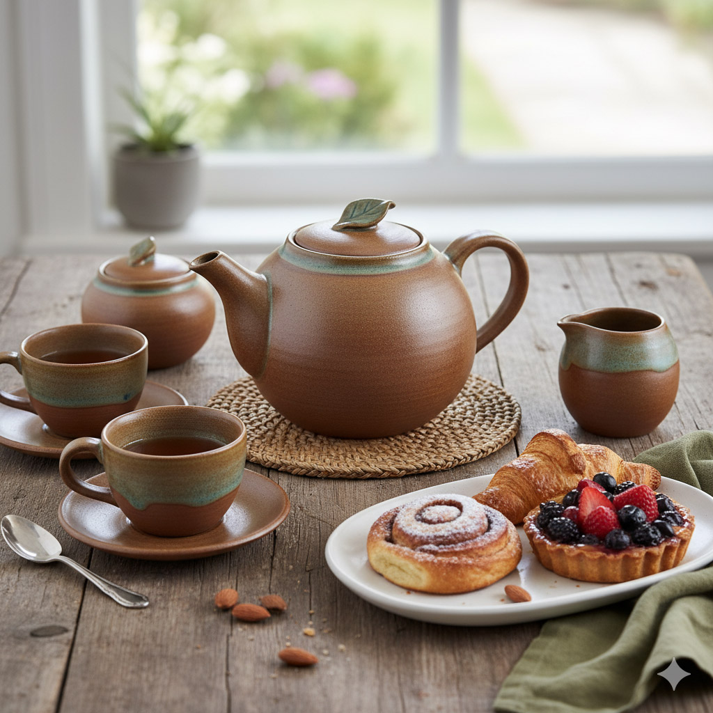
This picture has its own page with more detail, click here to see it.
It can be easy to get paranoid about whether your teapots will crack when hot water is poured in. What can you do? First, it may be comforting to know that if you have a freezer and a kettle, you are well equipped to stress test the performance of your ware from subzero to boiling water temperatures. As a beginner, the best body is the one that is the most plastic and easily formed, it will enable you to get the wall thickness as even as possible (likely the most important factor in avoiding temperature gradients). Use glazes that do not craze or shiver (these hide weakness and stress within looking for an opportunity to start a crack). Use a firing program similar to our C6DHSC schedule (even cooling leaves less stress within the ware). After you have made 50 teapots the accumulated experience may well indicate yours are good enough. If not, then study glaze fit and options to use a body:glaze combo having a lower coefficient of thermal expansion (e.g. bodies with less quartz, glazes with less KNaO).
Shivering on terra cotta is a red light not to ignore
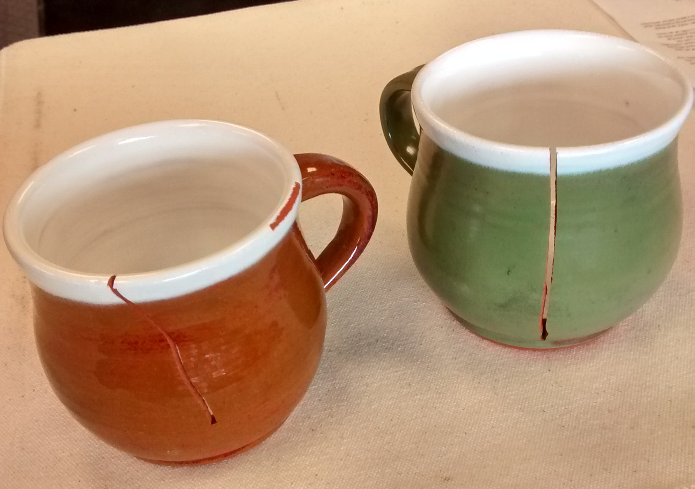
This picture has its own page with more detail, click here to see it.
Low fire terra cotta mugs have cracked. Why? The white glaze is under compression, its thermal expansion is too low (that is why it is also shivering off the rim). As the piece is cooling the kiln the thick layer of white glaze first solidifies. As cooling proceeds the body shrinks (thermally) at a faster rate than the glaze. The puts the glaze under compression and stretches the body. As some point (e.g. last stages of kiln cooling, a thermal stress during use) the body cracks to relieve the stress (notice how the white glaze is pushing the cracks apart). Neither the body or glaze are at fault, in this case they are simply made by different manufacturers and are thermal expansion incompatible. One solution would be to mix it with a white glaze that is crazing (the opposite problem). Or you could add some nepheline syenite to the glaze to increase its thermal expansion (maybe 10% by dry weight).
Dilatometer curve of vitreous porcelain (red) vs. stoneware body
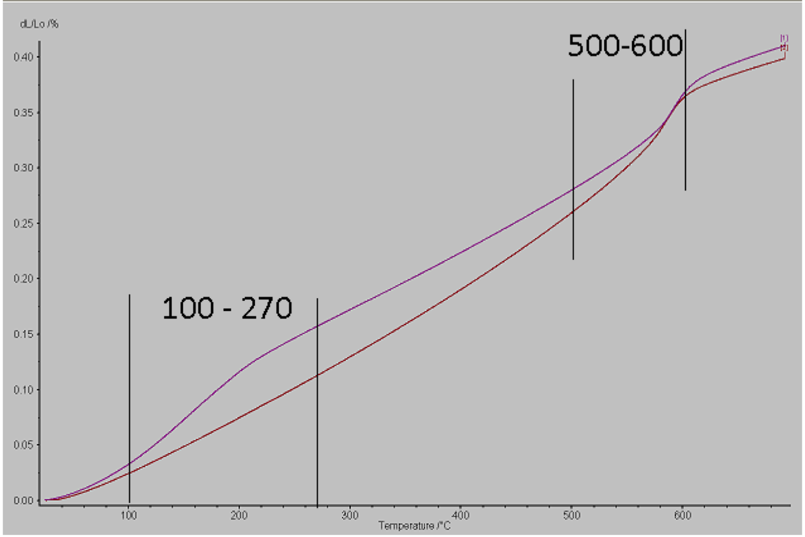
This picture has its own page with more detail, click here to see it.
The 500-600C zone is the alpha-beta inversion of quartz. Notice the vitreous body experiences a bigger expansion change there. But in the 100-270C cristobalite inversion region the stoneware undergoes a much more rapid change (especially in the 100-200C zone). This information affects how ware would be refired in production to avoid cracking (slowing down in these two zones). In addition, that stoneware would not be a good choice for an ovenware body. Photo courtesy of AF
Stoneware mug endures thermal shock better than kaolin or ball clay
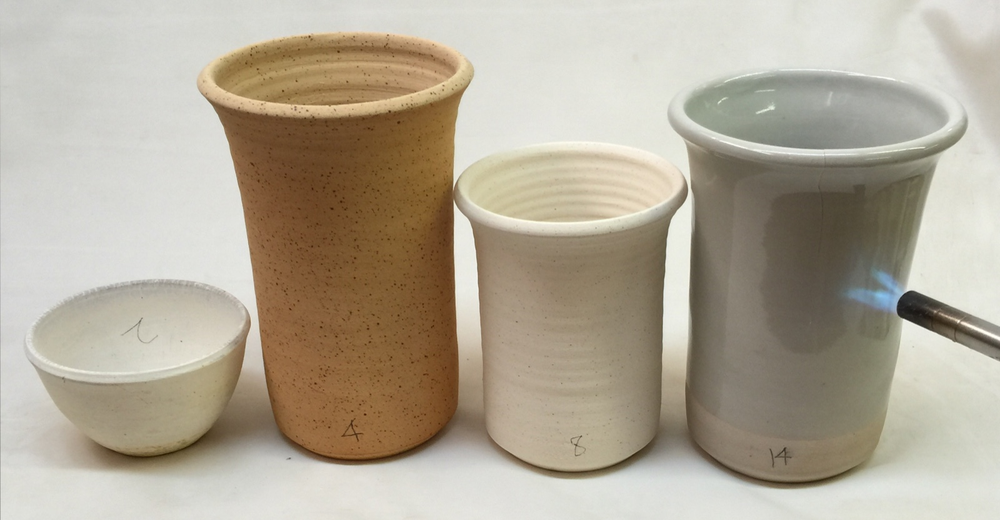
This picture has its own page with more detail, click here to see it.
These are fired at cone 10R. The kaolin bowl on the left survived 2 seconds! The ball clay next to it: 4 seconds. The Helmer clay (halloysite/kaolin) next to that: 8 seconds. The white stoneware piece: 14 seconds. A commercial stoneware mug could survive for 50 seconds or better. Thermal shock resistance is a complex subject. Of course, the size, thickness and contour of the ware are important. But many other factors come into play: quartz particle content and size, degree of maturity, thermal expansion of the matrix, homogeneity of the matrix, presence and fit of the glaze, internal structure of the mineral species (if the ware is not vitreous), their particles sizes and shapes, presence and type of aggregate (or grog), brittleness of the matrix, and more.
Thermal shocking kaolin, ball clay, halloysite and porcelain

This picture has its own page with more detail, click here to see it.
Left to right (all fired at cone 10): Pure 200 mesh kaolin vitrified at cone 10 cracked in two seconds. Next is a 42 mesh more refractory ball clay, it failed in four seconds. A refractory halloysite/kaolin material failed in eight seconds. A white glazed stoneware failed in 14 seconds.
The porcelain is harder, but the terra cotta has it beat for thermal shock!
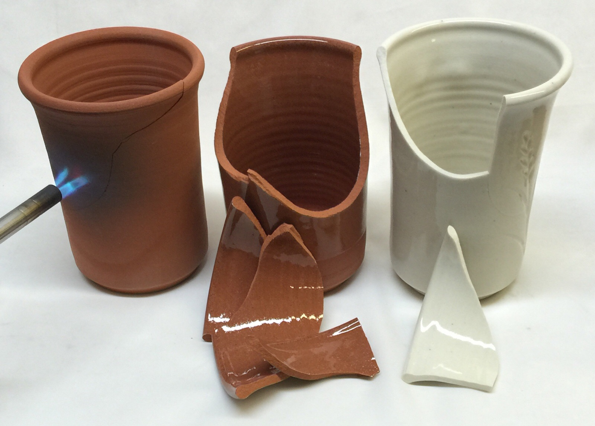
This picture has its own page with more detail, click here to see it.
This terra cotta cup (center) is glazed with G2931G clear glaze (Ulexite based) and fired at cone 03. It survives 30 seconds under direct flame against the sidewall and turns red-hot before a fracture occurs (the unglazed one also survived 30 seconds, it only cracked, it did not fracture). The porcelain mug (Plainsman M370) is glazed with G2926B clear, it survived 15 seconds (even though it is much thinner). The porcelain is much more dense and durable, but the porous nature of the earthenware clearly withstands thermal shock much better. It is actually surprisingly durable.
Thermal shock failure in raw ball clay much worse than the 100 mesh material
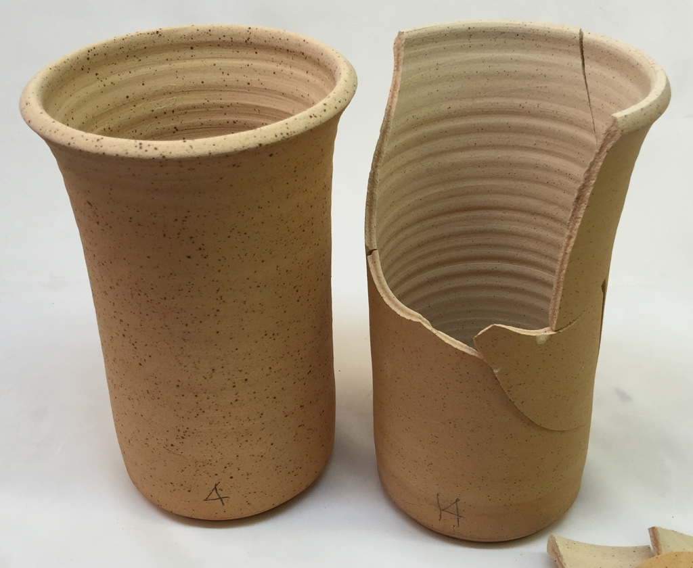
This picture has its own page with more detail, click here to see it.
The cup on the left is raw, unground, ball clay (Plainsman A2 fired to cone 10 reduction). It cracked under a flame in only 4 seconds. The 200 mesh version on the right lasted 14 seconds (it is broken because I dropped it). It would appear that the larger quartz particles in the material on the left are imparting much less resistance to thermal shock failure.
A flameware body recipe being tested for thermal shock. Is this a joke?
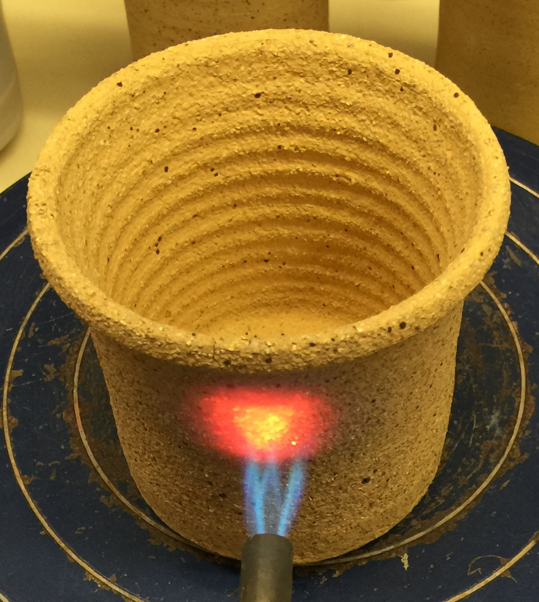
This picture has its own page with more detail, click here to see it.
A recommended flameware recipe from a respected website (equal parts of 35 mesh grog, talc and ball clay). It looks good on paper but mix it up for a surprise! The texture is ridiculously coarse. Recipes like this often employ fire clays and ball clays, but these have high quartz contents. In flame test like this a ball clay vessel could easily fail in 5 seconds. But this one is surviving still at the 90-second mark. Or is it? While porcelain pieces fail with a spectacular pop of flying shards, these open-porous bodies fail quietly (note the crack coming up to the rim from the flame). There was a potential to create cordierite crystals (the reason for the talc), but what potter can fire to cone 14 to make that happen? But the porosity of 12.5% would be difficult to deal with. On the positive side, you could likely continue using this vessel despite the crack, the coarse texture would make the crack seem like a minor inconvenience. The previous being said, heating here is asymmetrical, creating exponential stresses from hot to cold face. Ceramic can absorb differentials if the heat source were more evenly distributed radially from the bottom distributing centre-outward symmetrically.
Same body, glaze, thickness, firing. Same thermal shock. Only the tile crazed?
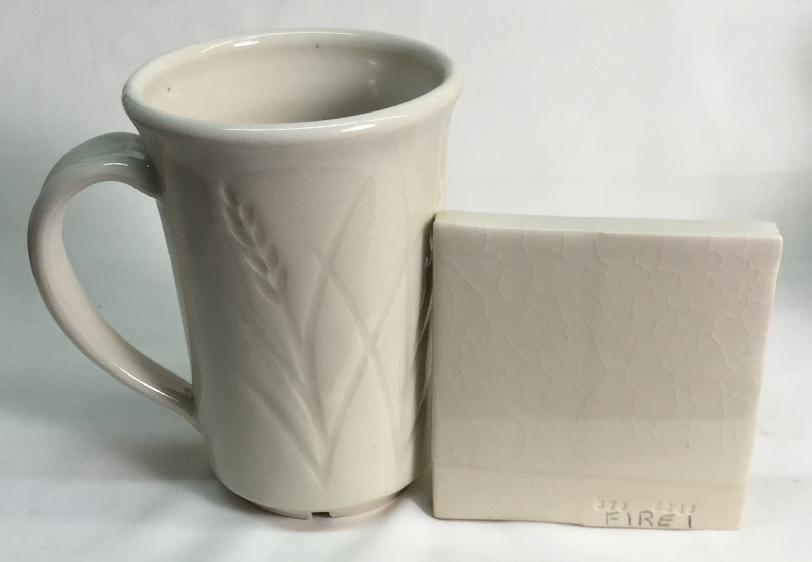
This picture has its own page with more detail, click here to see it.
Why did the glaze on the tile craze? It is double the thickness of the walls of the mug. Thus, when quenched in ice water (BWIW test), a greater gradient occurs between the hot interior of the clay and the rapidly cooling surface.
Terra cotta and a surprising thing about thermal shock
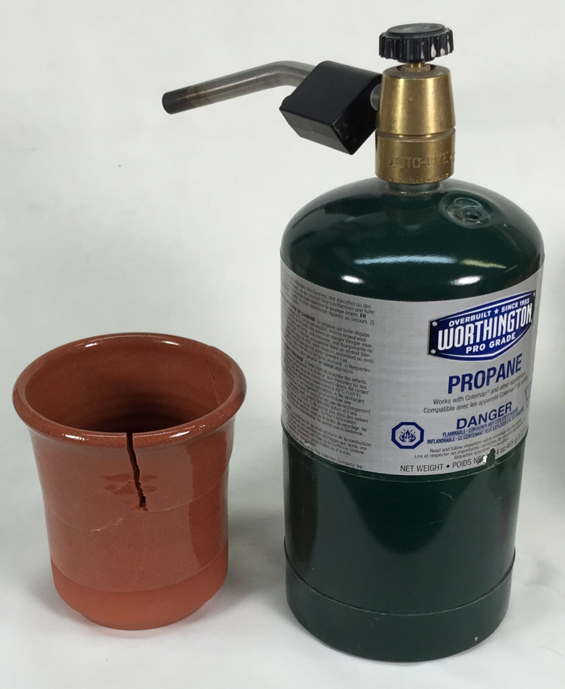
This picture has its own page with more detail, click here to see it.
This terra cotta cup is glazed with G2931G clear glaze (Ulexite based) and fired at cone 03. It survives 25 seconds under direct flame against the sidewall before a crack occurs. Typical porcelains and stonewares would survive 10 seconds. Super vitreous porcelains 5 seconds. This is an advantage of earthenware. Sudden changes in temperature cause localized thermal expansion, this produces tension and compression that easily cracks most ceramics. But the porous nature of earthenware absorbs it much better. During initial testing I found better performance for glazed earthenware (vs. unglazed), but in later testing they proved to be fairly similar. The TSFL test on consistently size tiles can be used to log more precise results.
A grog addition makes thermal shock resistance worse?
I tested this in a low COE Pyrax:Kaolin body
Pyrax (Pyrophillite) is a mineral having a very low thermal expansion. It stands to reason that if we can maximize its percentage in a body and not fire the body to a point that changes the crystal structure, it will be resistant to thermal-shock cracking. To that end, I mixed it with only kaolin (ball clay would add some quartz that would increase thermal expansion). I made slip-cast pieces of similar thickness for testing. I fired them to cone 2 (after finding that by cone 4, shock-resistance begins to decline). As you can see from the video, the addition of grog actually harms the performance! The higher the Pyrax, the better. To get a real appreciation for how well this body endures differential heat stress, wait till the end to see how a glazed porcelain piece compares.
An alumina kiln shelf that has cracked during firing
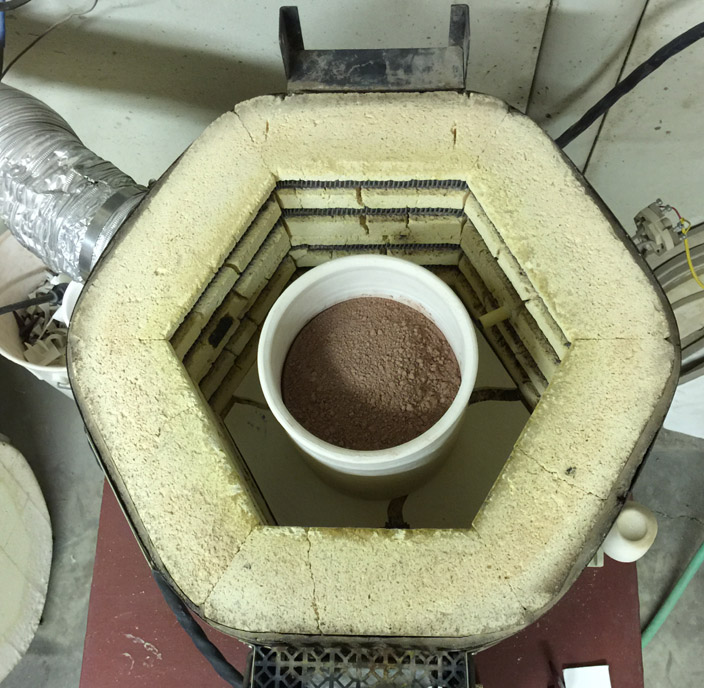
This picture has its own page with more detail, click here to see it.
This is due to its inability to withstand thermal gradients across its width. Typical sintered alumina is refractory, but it is not thermal shock resistant like tabular alumina. The inner part of the shelf was being protected from the rising heat because of this heavy, slow-to-rise calcimine vessel on top of it. The moment of the crack was so dramatic that, in spite of the weight on top of it, the shelf blew apart leaving 4 pieces with an inch-gap separating them.
Can you make things from zircopax? Yes.
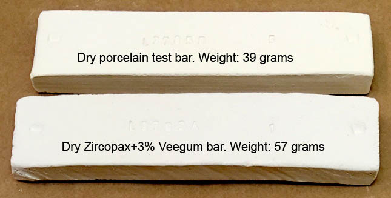
This picture has its own page with more detail, click here to see it.
Only 3% Veegum will plasticize Zircopax (zirconium silicate) enough that you can form anything you want. It is even more responsive to plasticizers than calcined alumina is and it dries very dense and shrinkage is quite low. Zircon is very refractory (has a very high melting temperature) and has low thermal expansion, so it is useful for making many things (the low thermal expansion however does not necessarily mean it can withstand thermal shock well). Of course you will have to have a kiln capable of much higher temperatures than are typical for pottery or porcelain to sinter it well.
Throw Zircopax on the potters wheel. Just add VeeGum.
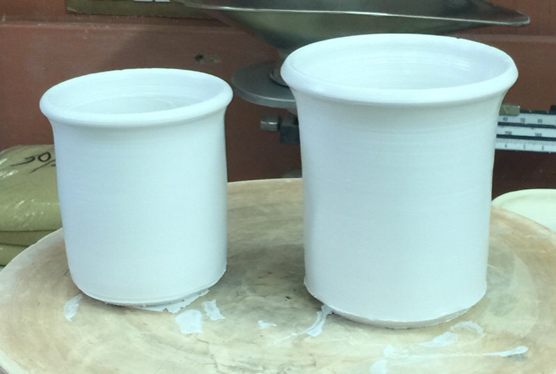
This picture has its own page with more detail, click here to see it.
These crucibles are thrown from a mixture of 97% Zircopax (zirconium silicate) and 3% Veegum T. The consistency of the material is good for rolling and making tiles but is not quite plastic enough to throw very thin (so I would try 4% Veegum next time). It takes alot of time to dewater on a plaster bat. But, these are like nothing I could make from any other material. They are incredibly refractory (fired to cone 10 they look like bisqued porcelain). However I have had mixed results for thermal shock resistance.
Inbound Photo Links
|
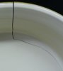 A dunting crack |
Links
| Glossary |
Dunting
Dunting generally refers to firing cracks that occur in ceramic ware as it is cooled in the kiln. The reason is generally uneven cross section or too rapid cooling. |
| Glossary |
Quartz Inversion
In ceramics, this refers to the sudden volume change in crystalline quartz particles experience as they pass up and down a temperature window centering on 573C. |
| Glossary |
Cristobalite Inversion
In ceramics, cristobalite is a form (polymorph) of silica. During firing quartz particles in porcelain can convert to cristobalite. This has implications on the thermal expansion of the fired matrix. |
| Glossary |
Glaze Crazing
Crazed ceramic glazes have a network of cracks. Understanding the causes is the most practical way to solve it. 95% of the time the solution is to adjust the thermal expansion of the glaze. |
| Glossary |
Vitrification
A process that happens in a kiln, the heat and atmosphere mature and develop the clay body until it reaches a density sufficient to impart the level of strength and durability required for the intended purpose. Most often this state is reached near zero p |
| Glossary |
Terra Cotta
A type of red firing pottery. Terra cotta clay is available almost everywhere, it is fired at low temperatures. But quality is deceptively difficult to achieve. |
| Glossary |
Food Safe
Be skeptical of claims of food safety from potters who cannot explain or demonstrate why. Investigate the basis of manufacturer claims and labelling and the actual use to which their products are put. |
| Glossary |
Dishwasher Safe
Dishwasher safety is a concern in ceramic table ware, especially if the ware has been imported or made by a small company or potter. |
| Tests |
300F:Ice Water Crazing Test
Ceramic glazes that do not fit the body often do not craze until later. This progressively stresses the fit until failure point, thus giving it a score |
| Tests |
Thermal Shock Failure
A simple test any potter can do by making and firing square tiles and using a plumbing torch to see how long before they fracture. |
| URLs |
http://www.astm.org/Standards/C554.htm
ASTM C554 - Thermal Shock Test Method for Crazing Resistance |
 PayPal | No tracking, No ads, No paywall, No transient content! Just organized, concise information constantly updated and improved. Was this helpful? Consider supporting me. |
| By Tony Hansen Follow me on        |  |
Got a Question?
Buy me a coffee and we can talk 

https://digitalfire.com, All Rights Reserved
Privacy Policy